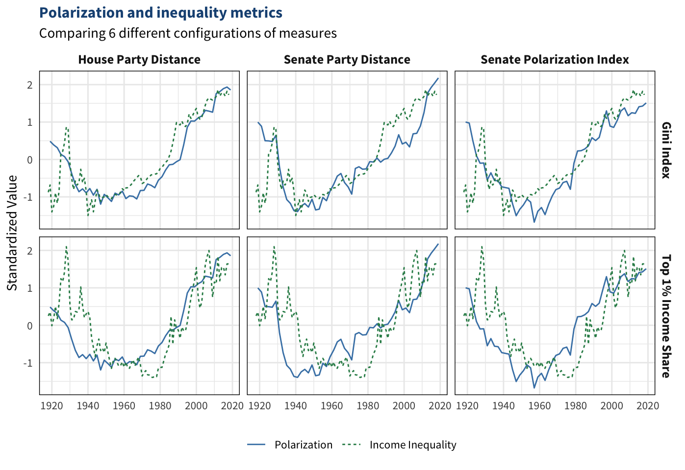

It was September 1787, just four years after the end of the American Revolution. The United States, a mere infant on the global stage, was wobbling toward failure at an alarming rate. Riots were breaking out around the country, states were fighting each other, and the federal government could barely keep the country together. Whatever respect it had—from its own people and from around the world—was drying up. The union was on the brink of collapse.
A convention of around 50 delegates had been debating solutions for months, desperate to save the union from recolonization by the British. Early on, the delegates had agreed that their current constitution, known as the Articles of Confederation, was riddled with problems so deep that they needed to scrap it altogether and start from scratch. Over the summer, they hashed out details of a completely new document that today we refer to simply as the Constitution.
Benjamin Franklin, probably the most respected delegate at the convention, carefully planned his closing remarks for the final day of debate. At 81, his health was too fragile to stand up and speak, so he handed his draft to a colleague to read on his behalf (Rossiter 1952). In this brief but powerful speech, Franklin (1787) admitted that he didn’t particularly care for this constitution. He had a whole range of problems with it, but he thought it best to keep them to himself.
I confess that there are several parts of this constitution which I do not at present approve, but I am not sure I shall never approve them. For having lived long, I have experienced many instances of being obliged by better information, or fuller consideration, to change opinions even on important subjects, which I once thought right, but found to be otherwise. It is therefore that the older I grow, the more apt I am to doubt my own judgment, and to pay more respect to the judgment of others. Most men indeed as well as most sects in Religion, think themselves in possession of all truth, and that wherever others differ from them it is so far error. Steele a Protestant in a Dedication tells the Pope, that the only difference between our Churches in their opinions of the certainty of their doctrines is, the Church of Rome is infallible and the Church of England is never in the wrong. But though many private persons think almost as highly of their own infallibility as of that of their sect, few express it so naturally as a certain french lady, who in a dispute with her sister, said “I don’t know how it happens, Sister but I meet with no body but myself, that’s always in the right-Il n’y a que moi qui a toujours raison.”
In these sentiments, Sir, I agree to this Constitution with all its faults, if they are such; because I think a general Government necessary for us, and there is no form of Government but what may be a blessing to the people if well administered, and believe farther that this is likely to be well administered for a course of years, and can only end in Despotism, as other forms have done before it, when the people shall become so corrupted as to need despotic Government, being incapable of any other. I doubt too whether any other Convention we can obtain, may be able to make a better Constitution. For when you assemble a number of men to have the advantage of their joint wisdom, you inevitably assemble with those men, all their prejudices, their passions, their errors of opinion, their local interests, and their selfish views. From such an assembly can a perfect production be expected? It therefore astonishes me, Sir, to find this system approaching so near to perfection as it does; and I think it will astonish our enemies, who are waiting with confidence to hear that our councils are confounded like those of the Builders of Babel; and that our States are on the point of separation, only to meet hereafter for the purpose of cutting one another’s throats. Thus I consent, Sir, to this Constitution because I expect no better, and because I am not sure, that it is not the best.… The opinions I have had of its errors, I sacrifice to the public good. I have never whispered a syllable of them abroad. Within these walls they were born, and here they shall die. If every one of us in returning to our Constituents were to report the objections he has had to it, and endeavor to gain partizans in support of them, we might prevent its being generally received, and thereby lose all the salutary effects and great advantages resulting naturally in our favor among foreign Nations as well as among ourselves, from our real or apparent unanimity.
There are many things about this constitution that I don’t think are a good idea, but I could be wrong. I will keep my issues with it to myself for the greater good. I haven’t mentioned any of my concerns to anyone outside of this room. If all of us were to speak out about our concerns with it and try to get people on our side, the public might not see the constitution as legitimate, and other nations would see our country as divided and unstable.
Quotes in this dissertation
Anytime part of a quote is omitted, you can click the ellipsis (…) to show the full quote. Older quotes have translate buttons which let you see modern translations of the text. These translations are my own interpretation, with some input from ChatGPT.
Franklin believed the delegates didn’t have much of a choice. The Constitution would at least delay a slide back into authoritarianism—better than nothing.
In these sentiments, Sir, I agree to this Constitution with all its faults, if they are such; because I think a general Government necessary for us, and there is no form of Government but what may be a blessing to the people if well administered, and believe farther that this is likely to be well administered for a course of years, and can only end in Despotism, as other forms have done before it, when the people shall become so corrupted as to need despotic Government, being incapable of any other. I doubt too whether any other Convention we can obtain, may be able to make a better Constitution. For when you assemble a number of men to have the advantage of their joint wisdom, you inevitably assemble with those men, all their prejudices, their passions, their errors of opinion, their local interests, and their selfish views.… From such an assembly can a perfect production be expected?
I support this constitution even though I think it’s flawed because we need a government of some sort, and any constitution could benefit society if it’s run well. I predict this government will be well run for a while, but it will eventually end in authoritarianism when people can no longer handle democracy, as has happened to republics in the past. I also don’t think it’s humanly possible to write a perfect constitution, so this draft might be as good as we can do.
Even if there was time to debate the draft more (which there wasn’t), none of these delegates really knew how to make it any better. This experiment, a bold venture into an ancient system of government, was the first of its scale in thousands of years. If this new constitution failed, no one really knew what to try next. The founders thought their first attempt would work, but it didn’t. This new document — a patchwork of guesses and compromises — was their only hope to stabilize the union. Some might even argue that democracy itself was at stake; if this experiment failed, perhaps no one would have attempted it again for ages to come.
The draft passed, launching the American Experiment 2.0 by 1789. It still stands to this day as the foundational document of the US, the oldest of its kind in the world.1 The remarkable endurance of the Constitution through the centuries is a source of great pride for Americans. Many see its apparent immortality as a sign of its merit; it’s lasted this long, so it must be well designed. The United States is the most powerful country in the world, so the Constitution must be doing something right. Indeed, if survival and power were the only goals, the Constitution was spectacularly successful. Yet few, if any, of the founders expressed a desire for the Constitution to last this long. Its very first sentence lays out far more than that:
We the People of the United States, in Order to form a more perfect Union, establish Justice, insure domestic Tranquility, provide for the common defense, promote the general Welfare, and secure the Blessings of Liberty to ourselves and our Posterity, do ordain and establish this Constitution for the United States of America.
We the people of the United States, in order to form a better society, establish justice, ensure peace, provide security, support the well-being of everyone, and maintain freedom for ourselves and future generations, are adopting this constitution.
Neither longevity nor dominance was ever a goal of the Constitution.2 In fact, after enduring the reign of the British Empire, the founders fought for quite the opposite. America was built not on a lust for global power and wealth, but on a modest longing for individual freedom. It was established on the notion that living in a fair system is more important than keeping the old one alive. At the very least, most of the founders recognized that any political system is bound to someday run its course and decay beyond repair. The question was not if the Constitution would fail, but when. After all, it would be pretty far-fetched to convince oneself that a constitution is destined to endure for all eternity; at some point it will end. As you may recall, Franklin predicted that the Constitution would be “well administered for a course of years, and can only end in Despotism.” Thomas Jefferson (1789) warned that all constitutions are prone to corruption at some point. To be safe, he argued, all constitutions should only last 19 years.3
[N]o society can make a perpetual constitution, or even a perpetual law. The earth belongs always to the living generation. They may manage it then, and what proceeds from it, as they please, during their usufruct. They are masters too of their own persons, and consequently may govern them as they please. But persons and property make the sum of the objects of government. The constitution and the laws of their predecessors extinguished them, in their natural course, with those whose will gave them being. This could preserve that being till it ceased to be itself, and no longer.… Every constitution, then, and every law, naturally expires at the end of 19 years. If it be enforced longer, it is an act of force and not of right.
No society should make a permanent constitution or law. The earth always belongs to the people living at any given time, not their ancestors. Therefore, any constitution or law that lasts longer than 19 years is illegitimate as it was forced onto its people, which violates their rights.
Jefferson believed that a permanent constitution with an indefinite timeline was morally wrong as it would infringe on future generations’ right to self-govern. Furthermore, future generations cannot depend on amendments alone to govern freely, no matter how flexible or “living” a constitution is.4 Without a mechanism to periodically reset the system, previously unforeseen forms of corruption and demagoguery can become solidified. Each generation has the natural right to form its own institutions so it can stamp out legacies of oppression, debts, and mistakes of the past. By Jefferson’s standards, the Constitution “naturally expired” in 1808, making it 11 times overdue for a full reevaluation.
The system Americans live in today is not their own. It does not belong to the living generations. It belongs to the past. More specifically, it belongs to a select few of a generation from long ago. The Constitution was crafted exclusively by wealthy white men, most of whom owned slaves and practiced law. They were what John Adams (1813) called the “natural aristocracy,” an elite class that considered itself to be the only class fit enough to hold power. These “natural aristocrats” only wanted democracy among themselves, which is why the right to vote was never mentioned in the Constitution until the 15th Amendment was ratified in 1870.
Even today, the right to vote apparently only extends to choosing leaders, not to choosing the system. Not once in the history of the nation have “the People” ever been asked if they consent to their own social contract. The last time Americans had a serious conversation about the design of the Constitution was the 1700s. Even then, the only people who had a say in it were wealthy white male politicians elected by other wealthy white men. Few constitutions still in existence were installed through such openly autocratic means; most republics and US states require their constitutions to pass a public vote (Anckar 2014; Ballotpedia 2023). It’s no surprise, then, that the “natural aristocracy” always finds its way to the top. The government has never truly been of the people or for the people because it was never by the people.
If you ask people whether they think the US needs a new constitution, nearly all will say no (Reports 2017). Yet ask them about their confidence in specific institutions—Congress, the presidency, the parties, elections—and most will express disapproval across the board (Gallup 2023; Montanaro 2018; Reinhart 2020). Public trust in the political system is at record lows, approval of politicians is abysmally low, and three of the last five presidents were elected by less than half of the nation for their first term (Pew Research Center 2023).5 Two-thirds of Americans are unhappy with the two-party system (Drutman, Galston, and Lindberg 2021). Barely anyone actually likes how politics work in the US. If people have faith in a foundational document but not in the system it lays out, then that faith is little more than blind faith.
From a young age, Americans are taught that the Constitution is a brilliant document, perhaps the most finely crafted of its kind, and it is the one thing that holds them all together. As far as constitutions go, it’s about as good as it gets. If even this constitution cannot prevent corruption, then nothing can. Political problems in the US therefore must originate from external forces: political parties, the media, big tech, big banks, big business, social movements, you name it. Corruption happens not because the government is poorly designed, but because economic or cultural elites rigged an otherwise sound system. Even the harshest critics of American society call for overhauling the economic system rather than overhauling the political system.
A note on the word “American”
Throughout this dissertation, I use the word “American” to refer primarily to the United States. The term “American” can also refer to the Americas as a whole, so many scholars criticize the use of the word in reference only to the United States. I use this term for two reasons: first, there is no clear adjective in the English language to refer to the United States other than American. Second, most Latin American countries follow similar constitutional models as the United States and experience similar struggles (usually worse struggles) with democracy. Hence, while I usually am referencing the United States when using the term “American,” in most cases it applies just as well to most other countries in the Americas.
But if a constitution cannot be expected to prevent external forces from corrupting its institutions, then what is the point of a constitution? How can a constitution escape blame for abuses of power when its sole purpose is to prevent abuses of power? This mindset—this mythology of a strong, immortal constitution that just needs a little slack right now—is not healthy. It blinds Americans from seeing where the roots of inequality in American society lie. Some of the deepest roots have been hiding in plain sight for centuries, written in clear ink on the one document Americans thought they could trust.
1.1 American politics from a comparative perspective
To understand not just the state of American politics but also why it operates the way it does, it helps to zoom out and look at the rest of the world. Gathering data on every country in the world is often not feasible and not necessary since many countries have vastly different histories and dynamics that are not directly comparable to each other. Therefore, the graphs and models in this dissertation typically focus on developed democracies—wealthy, industrialized, and generally free states. I often employ a sample of the 38 member countries of the Organisation for Economic Co-operation and Development (OECD). This group of countries is a roughly full slate of the world’s developed democracies, so the OECD is often used as a sample in comparative politics research for making appropriate comparisons between the US and similar countries (Lane, McKay, and Newton 1996).
Among these countries, the US tends to rank in the middle or near the bottom on most economic and political outcomes. The app in Figure 3.8 displays 12 different measures of variables relating to democracy, inequality, stability, and standard of living. The outcome that the US performs the best at is foreign influence: only 13 countries in the OECD have less foreign influence than the US. The only other variable on which the US scores in the top half of the OECD is the Human Development Index from the United Nations Development Programme (UNDP). This is a widely used indicator of standard of living. The US scores near the bottom on democracy, peace, income inequality, and poverty. Below is a full list of the US’s rankings on these indicators as of 2022, out of the 38 OECD nations:
14th most foreign influence (the External Intervention Indicator from the Fund for Peace’s Fragile States Index)
18th highest standard of living (the UNDP’s Human Development Index)
22nd highest economic freedom (the Heritage Foundation’s Index of Economic Freedom)
24th strongest rule of law (the World Justice Project’s Rule of Law Index)
28th highest in democracy (V-Dem’s Liberal Democracy Index)
28th highest in life expectancy (the UNDP)
31st highest on safety and security (the Societal Safety and Security component of Vision of Humanity’s Global Peace Index)
33rd most peaceful (Vision of Humanity’s Global Peace Index)
33rd most stable (the Fund for Peace’s Fragile States Index)
34th highest income inequality (the income share of the top 1% from the World Inequality Database)
36th highest poverty rate (the OECD)
One important outcome missing from this list is polarization. Comparing levels of polarization across different countries is difficult because polarization looks different in each country, but researchers have offered several approaches. Boxell, Gentzkow, and Shapiro (2022) gathered survey data from 12 democracies and measured affective polarization, the degree to which people dislike other political groups. They found that the US was the most polarized country in this sample and that polarization in the US was rising three times more quickly than any of the other countries. Stanig (2011) measured polarization slightly differently with survey data and found similar results. Studies of online polarization are consistent as well: Urman (2019) analyzed Twitter followings in 16 democracies and found that Twitter users in the US were among the least likely to follow politicians from other parties. From what we can tell, the US is one of the most polarized and most rapidly polarizing developed democracies in the world.
Outcomes such as income inequality are more straightforward when comparing countries. The US has the 5th highest Gini index in the OECD and the 4th highest income share of the top 1% of earners. The only developed democracies with more unequal economies are Bulgaria, Turkey, Mexico, and Costa Rica. Globally, the income distribution of the US is right around average, as the World Inequality Database shows. When looking at the income share of the top 1% of earners, the US has roughly the same level of income inequality as South Africa, India, most of the Middle East, and much of Latin America. The political and economic environments of the United States now resemble less stable countries more than peer nations.
1.1.1 How institutionalized inequality is overlooked
In the United States, economic inequality and political polarization have closely followed each other for at least the past century. McCarty, Poole, and Rosenthal (2006) first identified the connection, demonstrating that income inequality and congressional partisanship have closely followed each other in a self-reinforcing “dance” over the twentieth century. Although they offered explanations for both directions of causality, most scholarship in American political economy puts greater emphasis on inequality as the cause and polarization as the consequence (Barber and McCarty 2015; Garand 2010). However, ample evidence from the last decade casts doubt on this assumption (Dettrey and Campbell 2013; Gelman, Kenworthy, and Su 2010; Kwon 2014). Most notably, trends in polarization usually precede parallel trends in income inequality—a key detail that is often overlooked. Specifically, polarization in the Senate tends to precede polarization in the House, which has moved almost simultaneously with income inequality since they began to rise in the latter half of the twentieth century. This pattern challenges the notion that economic inequality is causing polarization.
In my master’s thesis (Morse 2021), I took a closer look at this relationship using vector autoregressions and error correction models. I employed several different measures of congressional polarization, including party homogeneity and a composite index derived from a dimension reduction algorithm. I found that income inequality has much stronger responses to congressional polarization than vice versa, and that the response of polarization to changes in income inequality is negative: polarization in Congress appears to cool down, not heat up, when income inequality rises. Overall, the results show that it is unlikely that the rising levels of income inequality in the U.S. over the last half century have caused the rising levels of congressional polarization. Rather, patterns in the income distribution tend to mirror patterns in the congressional ideological distribution of 10 years prior, suggesting that polarization is more of a cause than an effect of economic inequality.
Why has the precedence of polarization over inequality gone overlooked? I argue that two issues are at play. First, it makes more sense for economic processes to cause political processes. General theories of political economy tend to characterize political environments as mere reflections of economic environments. Modernization theory, for example, posits that economic development is usually a precursor for democratization (Boix 2003; Lipset 1959). Likewise, many economists stress that economic freedom is a prerequisite for political freedom (Friedman 1962), and political scientists stress that economic inequality reinforces political inequality (Gilens 2012).
As for the link between economic inequality and political polarization, comparative politics research suggests that inequality generally does cause polarization around the world. Sometimes the two processes are directly related (Gunderson 2021; Winkler 2019), and sometimes they are inversely related (Fenzl 2018; Iversen and Soskice 2015). Regardless, most countries experience changes to the income distribution before changes to their political environment. It would make sense, then, for the United States to follow the same pattern. For these reasons, American political economy scholarship is naturally biased toward evidence of the more intuitive direction of causality.
Although researcher bias can be minimized by rigorous adherence to the scientific method, all science is still easily vulnerable to bias. The second issue causing researchers to overlook the link between ideology and inequality in the United States is that this model is particularly prone to measurement bias, more than most. The appearance of the relationship between political polarization and economic inequality is highly dependent on measurement choices, visualization configurations, and model specifications, such that foundational choices by researchers can lead to entirely different results.
Consider the range of conflicting implications that arise when comparing a small sample of possible measures, shown in Figure 1.1. The first two columns of panels measure polarization in the House and Senate with the difference between the two parties’ mean DW-Nominate ideal points, referred to here as party distance. The third column uses a composite index I developed for my master’s thesis, referred to here as the polarization index.6 The rows of panels correspond to two different approaches to measuring income inequality, the Gini index and the income share of the top 1% of earners.
Code
#-------------------------------------------------------------------------------## STATIC FIGURE: POLARIZATION & INEQUALITY METRICS#-------------------------------------------------------------------------------## Income inequality metricsinc1 = inc %>%rename(`Gini Index`=gini, `Top 1% Income Share`=top1) %>%pivot_longer(!year, names_to="row") %>%mutate(concept ="Income Inequality", .after=row) %>%group_by(row) %>%mutate(norm =as.numeric(scale(value))) %>%ungroup()# Put together polarization datainc2 =bind_rows(`House Party Distance`=inc1, `Senate Party Distance`=inc1, `Senate Polarization Index`=inc1, .id="col") %>%select(year, row, col, concept, value, norm)# Merge polarization data and reshapepol1 =merge(id_cong, polar) %>%select(year, `House Party Distance`=hs_dist, `Senate Party Distance`=sen_dist, `Senate Polarization Index`=sen_pol) %>%pivot_longer(!year, names_to="col") %>%mutate(concept ="Polarization", .after=col) %>%group_by(col) %>%mutate(norm =as.numeric(scale(value))) %>%ungroup()# Put together income inequality datapol2 =bind_rows(`Gini Index`=pol1, `Top 1% Income Share`=pol1, .id="row") %>%select(year, row, col, concept, value, norm)# Put together all datametrics =bind_rows(pol2, inc2) %>%arrange(year, row, col) %>%mutate(concept = concept %>%factor(levels=unique(.))) %>%filter(year>1917, year<2020)# Plotggplot(metrics, aes(x=year, y=norm, linetype=concept, color=concept)) +geom_line() +facet_grid(row~col) +labs(title="Polarization and inequality metrics",subtitle="Comparing 6 different configurations of measures",x=NULL, y="Standardized Value", linetype=NULL, color=NULL) +scale_color_manual(values=c("steelblue", "seagreen")) +scale_x_continuous(breaks=seq(1920,2020,20)) + morse::theme_morse() +theme(panel.border =element_rect(color="black", fill=NA))

Figure 1.1: Congressional polarization and income inequaity in the United States, 1919-2019. All series were rescaled to be centered around 0 with a standard deviation of 1. Data sources: Voteview (Lewis et al. 2021) and Frank (2014).
When using the Gini index, the series are more highly correlated, and polarization appears to lag behind income inequality by a few years. Researchers may be inclined to employ the Gini index because of these patterns. However, the income shares of the top 1% are a more appropriate metric for this model. The Gini index is more sensitive to the center of the income distribution than to the tails, so it often skews the degree of overall inequality (Atkinson, Piketty, and Saez 2011). Income concentration at the top is a more reliable metric of the imbalance of economic resources.7
Turning to the choice of polarization metrics, the distance between the parties is the standard measure used in congressional behavior research, so it is used in most research on the link between polarization and inequality. However, polarization is typically defined in terms of two dimensions: the distance between the parties and the homogeneity within each party. Omitting an entire dimension of polarization can create an incomplete picture of the latent concept and an inaccurate estimate of its relationship with other processes. The polarization index in the final column in Figure 1.1 combines party distance and party homogeneity into a single measure smooths the data, making the two series more parallel than in any other configuration.
Another issue relating to the choice of polarization metrics is whether to focus the analysis on the House, the Senate, or both chambers equally. Scholarship tends to focus more on polarization in the House; researchers regressing income inequality on polarization often estimate models for each chamber separately and decide ex post to focus their analysis on the House because it produces better fitting models (e.g., Duca and Saving 2016).8 The better fit is likely a result of the near-contemporaneous movement of House polarization and income inequality. In my master’s thesis, I argue that their movement is too contemporaneous for one to be causing the other; they are more likely both responding to another force at a similar rate. The results suggest that polarization in the Senate is likely this force driving both House polarization and income inequality. Once again, robustness checks and exploratory data visualization with a broader range of measures help make this clear.
While writing my master’s thesis, I explored the measures and issues discussed in the previous section by producing interactive charts, animated graphs, and an interactive online appendix with regression tables. Figure 1.2 displays the 8 individual series from Figure 1.1 in a single-panel interactive chart that lets the reader toggle which series to display. The measures with the most theoretical support have been set to display by default, and readers can easily check other configurations.
Figure 1.2: Congressional polarization and income inequaity in the United States, 1919-2019. All series were rescaled to be centered around 0 with a standard deviation of 1. Data sources: Voteview (Lewis et al. 2021) and Frank (2014).
Interactive graphs serve a dual purpose: they make information easier to understand while simultaneously allowing for more information to be conveyed. Compared to the static chart, this interactive chart is more readable, user-friendly, and aesthetically pleasing, making it more accessible to lay readers. The menu button in the upper-right corner of the graph lets the user download the data, making it more transparent and reproducible for other researchers. This one example only begins to unravel the whole world of advantages of employing more modern visualization techniques that cannot fit in static publications. This dissertation explores many more questions about American politics through the lens of interactive media. Rich data visualizations are a powerful tool for understanding how and why the United States got where it is today and what can be done.
1.2 Is the US Constitution compatible with today’s society?
The US Constitution was one of the first of its kind, and nearly 1,000 national constitutions have been adopted since it was written according to data from the Elkins, Ginsburg, and Melton (2005).9 Two general constitutional models have emerged: majoritarian and consensus democracies.10 The US Constitution, the prime example of a majoritarian system, was once the dominant model worldwide. Over the last century, though, the American model has greatly lost its influence. Some scholars even argue that the US Constitution is now used more as an anti-model—an example of what not to do—because of its poor track record.
While constitutional courts around the world once cited the US Constitution and Supreme Court cases as precedents, they now tend to mention these more to distance themselves from the American model (Klug 2000). Law and Versteeg (2012) document the growing differences between the US Constitution and current mainstream constitutions. They note that a commonly cited reason for the declining influence of the US Constitution is that the US is “increasingly out of sync with an evolving global consensus on issues of human rights” (767). Another possible reason is that the bulk of countries that have democratized in the last several decades were in the former Soviet Bloc, so their constitutions were influenced more by parliamentary countries in Europe than by majoritarian countries in the Americas due to their proximity.
Perhaps the main reason the American model has declined is that newer models tend to perform more effectively. Countries with constitutions that are geared more toward the consensus model of democracy tend to have more political parties, less polarization, less economic inequality, better quality governance, and higher public satisfaction with the political system (Anderson and Guillory 1997; Bernaerts, Blanckaert, and Caluwaerts 2022; Birchfield and Crepaz 1998; Lijphart 2017; Riker 1982). These are general trends with plenty of exceptions. Furthermore, many studies only establish correlation, not causation, but they lay out a clear reason why the consensus model leads to better outcomes: it prevents any party from gaining too much power, whereas majoritarian systems can easily be controlled by a single party.
The key feature that determines whether a country’s constitution is more majoritarian or more consensus-based is its electoral system. Majoritarian systems use plurality elections (also known as winner-take-all elections or first-past-the-post voting), which usually give rise to two-party systems except in countries that are more geographically divided. Most majoritarian countries are presidential systems, but many are parliamentary. Consensus systems use proportional representation, where seats are divided up among the parties proportional to how many votes they receive. These countries almost always have multiparty systems. In the majoritarian model, two parties go back and forth holding power. The threat of the other party gaining power in the next election encourages the governing party to moderate its policies and respect people’s rights. In the consensus model, power is shared and diluted across several parties. Since no party is in the majority, two or more parties have to compromise on cabinet positions and policy agendas.
The most famous critique of American-style majoritarian systems comes from Juan Linz (1990), who argues that gridlock between the legislature and executive leads to presidencies gaining too much power, and that parliamentary systems bring more stability and more effective checks on power. Arend Lijphart’s work (1977, 1984, 2017) mostly corroborates Linz’s argument. Some scholars argue this is merely a spurious correlation. Most scholars agree that the majoritarian model can work in the right circumstances, especially in societies that are small and not very diverse. If a country has just one or two main social, ethnic, or ideological groups, then the majoritarian model tends to be stable and effective. But if a country is more diverse, the electoral institutions must be structured in a way that lets each group have their fair share of power. Majoritarian systems concentrate more power in the hands of a single group, whereas consensus systems encourage groups to cooperate and share power. Lijphart (1977) finds that “majority rule and democracy are incompatible” in societies that have deep social and ethnic divisions.
Figure 1.3: The historical index of ethnic fractionalization as of 2013, with bubble sizes proportional to population. The bubbles are jittered so that each one can be shown; there is no difference between bubbles on the top and the bottom. Data sources: Drazanova (2019) and V-Dem (2021).
The US is a relatively diverse country in many respects. Globally, it is just above average in terms of ethnic diversity, at a similar level to Brazil, Mexico, and Turkey. It’s hard to say how diverse the US is ideologically because the two-party system constrains mainstream ideologies to a single dimension. In recent years, the parties have been facing more gridlock internally as the establishment factions within each party struggle to maintain their grip on power over the growing populist factions, which is a sign that each party is becoming more diverse than they can handle. In most countries with the social and ideological diversity of the US, majoritarian constitutional systems tend not be very stable. Why, then, has the US remained stable for so long?
Until the early 1900s, voting rights in the US were limited to less than 40% of the adult population, mostly white men. There was diversity within this group, but nowhere near as much diversity as there is now that women, people of color, indigenous people, lower income people, and young adults can vote, on top of the fact that there are many more ideologies than were even conceivable when the Constitution was written. With a relatively small and homogeneous electorate, there was usually only one dividing line on political issues. First it was the Federalists vs. the Anti-Federalists, then Andrew Jackson brought a more populist vs. establishment divide, then the North-South divide became center-stage as tensions escalated into the Civil War, and a more working-class vs. business-class divide became salient in the late nineteenth century.
Figure 1.4: Rough estimates of the percent of the total population with voting rights (including children and non-citizens). The dip in suffrage rates since 2000 is likely due to the rising populations of non-citizen immigrants and disenfranchised felons. Suffrage rates were estimated by dividing McDonald’s (2023) voting-eligible population data by total population data from the Census Bureau. This series fluctuated every few years because the Census population estimates are at ten-year intervals while the voting-eligible population data are at four-year intervals. To account for this, the suffrage rates were smoothed using LOESS regression.
As more groups were brought into the electorate over the twentieth century, it became harder to incorporate everyone in a two-party system. By the 1970s, more people than ever could vote, immigration was bringing in more minorities, and the rising conservative movement was bringing more ideological diversity within white voters. The US was solidly in the territory where majoritarian institutions start to struggle. When a majoritarian system reaches this situation, political actors can take it in two directions: either undo the changes that have brought it to this point (by restricting voting rights, curbing immigration, or ramping up propaganda to manufacture consent with the status quo) or accept the change and adopt systems that give everyone a seat at the table.
There were signs that the majoritarian system was stressed even in the 1970s—political polarization started rising, voter turnout started declining, elections became more monetized, and economic inequality started deepening—but it had yet to reach a breaking point until Donald Trump’s rise in 2016. The country is now in a critical moment of its history. It can either reevaluate the foundational elements of its political system or let them continue to deteriorate.
1.2.1 The three tyrannies that plague constitutions
Constitutions face three main challenges throughout their tenure. The first issue, tyranny of the majority, was coined by Alexis de Tocqueville (1899). Institutions run by majority rule can easily invade on the rights of the majority. The Framers of the Constitution were keenly aware of this challenge long before de Tocqueville wrote about it, and they filled the Constitution with measures they hoped would prevent it. Chapter 3 of this dissertation posits that these measures cease to work in a two-party system. The hallmark of the Constitution’s design—the separation of powers into three independent branches, each with mechanisms to push back on the others’ abuses of power—only works in the context of a multiparty system. For the Constitution to work effectively, it would need to prescribe electoral institutions geared toward multiparty systems such as multi-member districts with proportional representation.
The second challenge is referred to here as the tyranny of the minority, echoing de Tocqueville. Scholars and commentators have used this phrase in recent years to describe the situation where a small fraction of the population has undue influence over politics. I argue in Chapter 4 that the Senate enables minority rule in the US. The inequitable representation of the Senate leads to less personal and economic freedom for society. Over time, any groups that happen to be overrepresented can skew policy in their favor, building up a snowball effect of increasingly unfair outcomes. People naturally use this advantage to gain more freedom for themselves at the expense of others’ freedom.
Finally, the most silent challenge constitutions face is the tyranny of the dead, when institutions and laws from long ago become so cemented that the present generations cannot self-govern effectively. I borrowed this phrase from a conservative columnist who praised this feature of the Constitution, writing that “constitutionalism—which is ancient wisdom rendered into legal code—is the tyranny of the dead, the ultimate reach of the past into the future” (Krauthammer 2018). Chapter 5 explores the rigidity of the Constitution through a more critical lens. I argue that entrenched constitutions are at higher risk for democratic backsliding, economic inequality, and polarization. When constitutions remain largely unchanged for long periods of time, the public sees the political system in general as unchangeable, and voters lose motivation to stay engaged in politics. This, in turn, signals to elites that they face lower costs for skewing economic policy in their favor or letting elite infighting polarize the political environment.
Taken together, these three aspects of the American political system reinforce a polarized two-party system dominated by elites who answer to a minority of the population. Much of the polarization, democratic backsliding, and rising inequality of recent decades have been ocurring not in spite of the Constitution, but because of it. Admittedly, this is a bold claim that requires extensive evidence. To help make the case, this dissertation features interactive visualizations and data apps which offer far more power than text and simple charts alone. Before getting into the substance of the argument, I lay out why using dynamic media is so important for these kinds of conversations in Chapter 2. It is hard to convey the weaknesses of the static, unchanging US Constitution with static, unchanging graphs. As this dissertation shows, the twenty-first century demands dynamic content and dynamic constitutions.
1.3 Advancements made by this work
Throughout this dissertation, several contributions are made not just to the field of political science, but to academia at large and the public. It establishes guidelines for optimizing data visualizations for screens rather than print, synthesizes literature from American politics and comparative politics regarding constitutional design, develops novel theories explaining how the Constitution affects polarization and inequality, shows that the Constitution is so unique that many of its idiosyncrasies are not reflected in comparative analyses of state-level and national-level institutions, and provides a comprehensive critique of the design of the Constitution.
1.3.1 Contributions to the academy
While Edward Tufte (2001) and others have offered a wealth of knowledge on the best practices for visualizing data in general, most fields have not yet developed clear norms for presenting data in interactive and animated formats. These more modern methods open up new dimensions of design choices in a relatively uncharted territory for academia. Chapter 2 proposes some foundational standards that researchers in any field can follow when producing digital media to visualize their work. It provides design principles and methods for creating interactive graphs, adding animation to graphs, sharing graphs on social media, and producing web-based publications.
The dissertation itself exemplifies the power of interactivity by incorporating features that cannot fit in PDFs or printed media. It includes built-in replication code, translate buttons for quotes, collapsible appendices, and powerful apps visualizing data. One could fill books describing all the information packed into apps such as the Constitutionater. Even then, written text does not do justice for the enormous amount of data available today. Interactive visualizations are much more efficient, engaging, and effective at communicating ideas. Just as American political institutions would benefit from being more dynamic, so too would the content produced by researchers. Static content and constitutions hold back progress at a time when progress is imperative.
1.3.2 Contributions to political science
This dissertation begins to unpack how the Constitution shapes political and economic inequality. Chapter 4 presents a novel theory outlining the causal mechanisms through which the apportionment of the Senate creates asymmetric polarization and enables economic inequality to rise. Although intuitive, this theory has not be clearly stated or studied. Researchers have analyzed the effects of the Senate’s apportionment on democratic representation and the effects of the Senate’s filibuster rule on polarization and inequality, but not as much work has been done on how the Senate’s apportionment in particular affects polarization and inequality. Part of the reason research is limited in this area is that the Senate does not offer enough data to exploit. I expanded my study to investigate whether similar causal mechanisms are operating in state legislatures and could not find evidence of these patterns, suggesting that a more qualitative investigation of the Senate would be useful for future research.
Second, I propose a reinterpretation of Madisonian theories of constitutional design. Most research overlooks the idea that the Framers of the US Constitution built the document on the assumption that the US would naturally develop a multiparty system (although they did not use this vocabulary). Chapter 3 then discusses the implications of this assumption on the overall institutional design, which has yet to be fully explored by historians and political scientists.
Third, I find in Chapter 5 that no existing theory is able to predict a constitution’s ideal lifespan after which democratic backsliding can be expected. Figures such as Jefferson’s universal 19-year standard and more individualized life expectancies estimated by survival analysis models and more advanced algorithms do not appear to be meaningful. Each constitution’s life cycle is unique and cannot be adequately explained with large-N analyses. I built an app that accounts for a country’s geographic, cultural, political, and economic environment to predict an optimal constitutional design to maximize its endurance and performance. This app can help reformers, researchers, and the public explore how constitutional choices affect a variety of outcomes in different contexts.
More broadly, this dissertation offers the most comprehensive critique of the US Constitution in the political science literature. Most critical research focuses on individual features of the document, but the field has not yet developed a general theory explaining how the Constitution as a whole has contributed to the recent waves of polarization, inequality, and authoritarianism. This theory is difficult to test empirically, and I have only begun to search for evidence of the theory’s implications quantitatively. The null results on my analyses suggest that different methodologies are needed to gain a fuller understanding of how the Constitution affects these outcomes. The overall theory that the Constitution is no longer fit for American society is well-grounded in comparative politics scholarship, but the magnitude of the Constitution’s effects is still an open question.
1.3.3 Contributions to the public discourse
Throughout this work, I push back on many popular beliefs regarding American political institutions. The most prominent reforms that have been proposed to strengthen American democracy—ranked-choice voting, term limits on Congress, open primaries, campaign finance reform, and abolishing the Electoral College, to name a few—are mere bandaids that often cause more problems than they solve. In the long run, larger-scale reforms such as proportional representation and limitations on presidential power will be needed to restore a healthy, sustainable political order in the United States.
This dissertation calls for Americans to take a closer look at their foundational document. Legal scholars such as Sanford Levinson (2006) have made similar calls, but to my knowledge no work has extensively critiqued the document’s construction through the lens of comparative politics scholarship. Chapters 3 through 5 of this dissertation document evidence that the Constitution was built around theories that have been thoroughly refuted by political science research. Chapter 6 offers a thorough yet concise critique of the Constitution’s design and recommends a path to changing it. The interactive data apps and videos throughout the work help show how and why democracy is breaking down in the US. Putting American politics in perspective by displaying the effects of institutional models from around the world is an important step toward building a better system.
Alvaredo, Facundo et al. 2018. The World Inequality Report. Harvard University Press. https://wir2018.wid.world/.
Barber, Michael J., and Nolan McCarty. 2015. “Causes and Consequences of Polarization.” In Solutions to Political Polarization in America, ed. Nathaniel Persily. Cambridge University Press, 15–58.
Drutman, Lee, William A. Galston, and Tod Lindberg. 2021. “Spoiler Alert: Why Americans’ Desires for a Third Party Are Unlikely to Come True.” In University Press of Kansas, 254–88. https://www.voterstudygroup.org/publication/spoiler-alert.
Elkins, Zachary, Tom Ginsburg, and James Melton. 2005. “Characteristics of National Constitutions [v.2.0].”Comparative Constitutions Project. http://www.comparativeconstitutionsproject.org.
Frank, Mark W. 2014. “A New State-Level Panel of Annual Inequality Measures over the Period 1916–2005.”Journal of Business Strategies 31(1): 241–63. https://www.shsu.edu/eco_mwf/inequality.html.
Goerg, Georg. 2013. “Forecastable Component Analysis.” In International Conference on Machine Learning, Proceedings of Machine Learning Research, 64–72.
Klug, Heinz. 2000. “Model and Anti-Model: The United States Constitution and the Rise of World Constitutionalism.”Wisconsin Law Review 2000. https://ssrn.com/abstract=3523330.
Morse, Nathan. 2021. “Untangling Ideology and Inequality in the United States: How Polarization Deepens Economic Inequality.” Master’s thesis. Pennsylvania State University. http://nmorse.com/thesis.
Rossiter, Clinton. 1952. “The Political Theory of Benjamin Franklin.”The Pennsylvania Magazine of History and Biography 76(3): 259–93. http://www.jstor.org/stable/20088376 (July 4, 2023).
Stanig, Piero. 2011. “Measuring Political Polarization in Comparative Perspective.” In APSA 2011 Annual Meeting Paper, https://ssrn.com/abstract=1903475.
The Magna Carta (1215) is a much older foundational document, but scholars disagree on whether it counts as a constitution (Radin 1947). It is more similar to a bill of rights than a modern constitution that lays out the institutional structure and processes for a political system. The structures and processes that it did enumerate related to powers of the king, barons, and clergy, which now have little to no relevance in the United Kingdom’s political system; nearly all of the Magna Carta’s provisions were repealed in the nineteenth century (Blick 2015). For these reasons, the Magna Carta is a fundamentally different type of document than most other constitutions from the last two centuries.↩︎
One could argue that the phrase “secure the Blessings of Liberty to ourselves and our Posterity” implies that the Constitution was intended to live as long as possible, as “posterity” refers to all generations into an indefinite future. But this phrase is more specific than simply calling for the the Constitution to last long; it calls for the Constitution to last long in good health. The performance of the Constitution was more important than its longevity.↩︎
19 years is a odd number. Jefferson laid out some complicated math for how he came up with that figure, which is discussed in Chapter 5.↩︎
In Jefferson’s words: “It may be said that the succeeding generation exercising in fact the power of repeal, this leaves them as free as if the constitution or law had been expressly limited to 19 years only. … But the power of repeal is not an equivalent. It might be indeed if every form of government were so perfectly contrived that the will of the majority could always be obtained fairly and without impediment. But this is true of no form. The people cannot assemble themselves; their representation is unequal and vicious. Various checks are opposed to every legislative proposition. Factions get possession of the public councils. Bribery corrupts them. Personal interests lead them astray from the general interests of their constituents; and other impediments arise so as to prove to every practical man that a law of limited duration is much more manageable than one which needs a repeal.”↩︎
Bill Clinton received 43% of the popular vote in 1992, George W. Bush received 48% in 2000, Barack Obama received 53% in 2008, Donald Trump received 46% in 2016, and Joe Biden received 51% in 2020 (Encyclopaedia Britannica 2023).↩︎
The index combines party distance (the difference between the mean ideal points of the two parties) and party homogeneity (the pooled standard deviation of each party’s ideal points) using forecastable component analysis (ForeCA), a variant of principal component analysis which reduces multivariate time series into fewer components (Goerg 2013).↩︎
For a more thorough explanation of why income inequality is better measured with top income shares than with the Gini index, see the World Inequality Report(Alvaredo et al. 2018).↩︎
Theoretically, researchers may justify focusing on the House because it has more frequent opportunity for turnover and is more sensitive to mass political preferences. In practice, though, the Senate tends to polarize before the House (Morse 2021), likely due to its apportionment and filibuster practices (Lee and Oppenheimer 1999).↩︎
Constitutions vary greatly from country to country. Elkins, Ginsburg, and Melton (2009, 49) define a constitution as a document or set of documents that fit one or more of the following criteria: “(1) are identified explicitly as the Constitution, Fundamental Law, or Basic Law of a country; OR (2) contain explicit provisions that establish the documents as the highest law, either through entrenchment or limits on future law; OR (3) define the basic pattern of authority by establishing or suspending an executive branch of government.” These same researchers compiled a full dataset of national constitutions that fit this description from 1789 through the present (Elkins, Ginsburg, and Melton 2005).↩︎
Consensus democracies are also known as consociational or consensual democracies. The majoritarian model is also known as the Westminster model. Most majoritarian democracies are presidential systems and most consensus democracies are parliamentary systems, but these concepts do not overlap entirely. For example, the UK is parliamentary but has a majoritarian system overall, and Brazil is presidential but has a consensus system.↩︎
Source Code
# Introduction {#sec-intro}{{< include _data.qmd >}}It was September 1787, just four years after the end of the American Revolution. The United States, a mere infant on the global stage, was wobbling toward failure at an alarming rate. Riots were breaking out around the country, states were fighting each other, and the federal government could barely keep the country together. Whatever respect it had---from its own people and from around the world---was drying up. The union was on the brink of collapse.A convention of around 50 delegates had been debating solutions for months, desperate to save the union from recolonization by the British. Early on, the delegates had agreed that their current constitution, known as the Articles of Confederation, was riddled with problems so deep that they needed to scrap it altogether and start from scratch. Over the summer, they hashed out details of a completely new document that today we refer to simply as the Constitution.Benjamin Franklin, probably the most respected delegate at the convention, carefully planned his closing remarks for the final day of debate. At 81, his health was too fragile to stand up and speak, so he handed his draft to a colleague to read on his behalf [@rossiter1952]. In this brief but powerful speech, @franklin1787 admitted that he didn't particularly care for this constitution. He had a whole range of problems with it, but he thought it best to keep them to himself.> ::: quote-orig> I confess that there are several parts of this constitution which I do not at present approve, but I am not sure I shall never approve them. [For having lived long, I have experienced many instances of being obliged by better information, or fuller consideration, to change opinions even on important subjects, which I once thought right, but found to be otherwise. It is therefore that the older I grow, the more apt I am to doubt my own judgment, and to pay more respect to the judgment of others. Most men indeed as well as most sects in Religion, think themselves in possession of all truth, and that wherever others differ from them it is so far error. Steele a Protestant in a Dedication tells the Pope, that the only difference between our Churches in their opinions of the certainty of their doctrines is, the Church of Rome is infallible and the Church of England is never in the wrong. But though many private persons think almost as highly of their own infallibility as of that of their sect, few express it so naturally as a certain french lady, who in a dispute with her sister, said "I don't know how it happens, Sister but I meet with no body but myself, that's always in the right-Il n'y a que moi qui a toujours raison." <br><br>In these sentiments, Sir, I agree to this Constitution with all its faults, if they are such; because I think a general Government necessary for us, and there is no form of Government but what may be a blessing to the people if well administered, and believe farther that this is likely to be well administered for a course of years, and can only end in Despotism, as other forms have done before it, when the people shall become so corrupted as to need despotic Government, being incapable of any other. I doubt too whether any other Convention we can obtain, may be able to make a better Constitution. For when you assemble a number of men to have the advantage of their joint wisdom, you inevitably assemble with those men, all their prejudices, their passions, their errors of opinion, their local interests, and their selfish views. From such an assembly can a perfect production be expected? It therefore astonishes me, Sir, to find this system approaching so near to perfection as it does; and I think it will astonish our enemies, who are waiting with confidence to hear that our councils are confounded like those of the Builders of Babel; and that our States are on the point of separation, only to meet hereafter for the purpose of cutting one another's throats. Thus I consent, Sir, to this Constitution because I expect no better, and because I am not sure, that it is not the best.]{#q-franklin1787 .collapse} [...](#q-franklin1787 "Show omitted text"){.ellipsis data-bs-toggle="collapse" role="button" aria-expanded="false" aria-controls="q-franklin1787"} The opinions I have had of its errors, I sacrifice to the public good. I have never whispered a syllable of them abroad. Within these walls they were born, and here they shall die. If every one of us in returning to our Constituents were to report the objections he has had to it, and endeavor to gain partizans in support of them, we might prevent its being generally received, and thereby lose all the salutary effects and great advantages resulting naturally in our favor among foreign Nations as well as among ourselves, from our real or apparent unanimity.> :::>> ::: quote-modern> There are many things about this constitution that I don't think are a good idea, but I could be wrong. I will keep my issues with it to myself for the greater good. I haven't mentioned any of my concerns to anyone outside of this room. If all of us were to speak out about our concerns with it and try to get people on our side, the public might not see the constitution as legitimate, and other nations would see our country as divided and unstable.> :::::: {.callout-tip .column-margin .mt-0}## Quotes in this dissertationAnytime part of a quote is omitted, you can click the ellipsis (...) to show the full quote. Older quotes have translate buttons <iclass="bi bi-translate"></i> which let you see modern translations of the text. These translations are my own interpretation, with some input from [ChatGPT](https://chat.openai.com/share/e0dd1835-6170-4179-8872-95c764e133eb){target="blank"}.:::Franklin believed the delegates didn't have much of a choice. The Constitution would at least *delay* a slide back into authoritarianism---better than nothing.> ::: quote-orig> In these sentiments, Sir, I agree to this Constitution with all its faults, if they are such; because I think a general Government necessary for us, and there is no form of Government but what may be a blessing to the people if well administered, and believe farther that this is likely to be well administered for a course of years, and can only end in Despotism, as other forms have done before it, when the people shall become so corrupted as to need despotic Government, being incapable of any other. I doubt too whether any other Convention we can obtain, may be able to make a better Constitution. [For when you assemble a number of men to have the advantage of their joint wisdom, you inevitably assemble with those men, all their prejudices, their passions, their errors of opinion, their local interests, and their selfish views.]{#q-franklin1787b .collapse} [...](#q-franklin1787b "Show omitted text"){.ellipsis data-bs-toggle="collapse" role="button" aria-expanded="false" aria-controls="q-franklin1787b"} From such an assembly can a perfect production be expected?> :::>> ::: quote-modern> I support this constitution even though I think it's flawed because we need a government of some sort, and any constitution could benefit society if it's run well. I predict this government will be well run for a while, but it will eventually end in authoritarianism when people can no longer handle democracy, as has happened to republics in the past. I also don't think it's humanly possible to write a perfect constitution, so this draft might be as good as we can do.> :::Even if there was time to debate the draft more (which there wasn't), none of these delegates really knew how to make it any better. This experiment, a bold venture into an ancient system of government, was the first of its scale in thousands of years. If this new constitution failed, no one really knew what to try next. The founders thought their first attempt would work, but it didn't. This new document --- a patchwork of guesses and compromises --- was their only hope to stabilize the union. Some might even argue that democracy itself was at stake; if this experiment failed, perhaps no one would have attempted it again for ages to come.The draft passed, launching the American Experiment 2.0 by 1789. It still stands to this day as the foundational document of the US, the oldest of its kind in the world.[^intro-1] The remarkable endurance of the Constitution through the centuries is a source of great pride for Americans. Many see its apparent immortality as a sign of its merit; it's lasted this long, so it must be well designed. The United States is the most powerful country in the world, so the Constitution must be doing something right. Indeed, if survival and power were the only goals, the Constitution was spectacularly successful. Yet few, if any, of the founders expressed a desire for the Constitution to last this long. Its very [first sentence](https://www.archives.gov/founding-docs/constitution-transcript) lays out far more than that:[^intro-1]: The [Magna Carta](https://www.nationalarchives.gov.uk/education/resources/magna-carta/british-library-magna-carta-1215-runnymede/){target="_blank"} (1215) is a much older foundational document, but scholars disagree on whether it counts as a constitution [@radin1947]. It is more similar to a bill of rights than a modern constitution that lays out the institutional structure and processes for a political system. The structures and processes that it did enumerate related to powers of the king, barons, and clergy, which now have little to no relevance in the United Kingdom's political system; nearly all of the Magna Carta's provisions were repealed in the nineteenth century [@blick2015]. For these reasons, the Magna Carta is a fundamentally different type of document than most other constitutions from the last two centuries.> ::: quote-orig> We the People of the United States, in Order to form a more perfect Union, establish Justice, insure domestic Tranquility, provide for the common defense, promote the general Welfare, and secure the Blessings of Liberty to ourselves and our Posterity, do ordain and establish this Constitution for the United States of America.> :::>> ::: quote-modern> We the people of the United States, in order to form a better society, establish justice, ensure peace, provide security, support the well-being of everyone, and maintain freedom for ourselves and future generations, are adopting this constitution.> :::Neither longevity nor dominance was ever a goal of the Constitution.[^intro-2] In fact, after enduring the reign of the British Empire, the founders fought for quite the opposite. America was built not on a lust for global power and wealth, but on a modest longing for individual freedom. It was established on the notion that living in a fair system is more important than keeping the old one alive. At the very least, most of the founders recognized that any political system is bound to someday run its course and decay beyond repair. The question was not *if* the Constitution would fail, but *when*. After all, it would be pretty far-fetched to convince oneself that a constitution is destined to endure for all eternity; at some point it will end. As you may recall, Franklin predicted that the Constitution would be "well administered for a course of years, and can only end in Despotism." Thomas @jefferson1789 warned that all constitutions are prone to corruption at some point. To be safe, he argued, all constitutions should only last 19 years.[^intro-3][^intro-2]: One could argue that the phrase "secure the Blessings of Liberty to ourselves and our Posterity" implies that the Constitution was intended to live as long as possible, as "posterity" refers to all generations into an indefinite future. But this phrase is more specific than simply calling for the the Constitution to last long; it calls for the Constitution to last long *in good health*. The performance of the Constitution was more important than its longevity.[^intro-3]: 19 years is a odd number. Jefferson laid out some complicated math for how he came up with that figure, which is discussed in [Chapter @sec-entrenchment].> ::: quote-orig> \[N\]o society can make a perpetual constitution, or even a perpetual law. The earth belongs always to the living generation. [They may manage it then, and what proceeds from it, as they please, during their usufruct. They are masters too of their own persons, and consequently may govern them as they please. But persons and property make the sum of the objects of government. The constitution and the laws of their predecessors extinguished them, in their natural course, with those whose will gave them being. This could preserve that being till it ceased to be itself, and no longer.]{#q-jefferson1789 .collapse} [...](#q-jefferson1789 "Show omitted text"){.ellipsis data-bs-toggle="collapse"} Every constitution, then, and every law, naturally expires at the end of 19 years. If it be enforced longer, it is an act of force and not of right.> :::>> ::: quote-modern> No society should make a permanent constitution or law. The earth always belongs to the people living at any given time, not their ancestors. Therefore, any constitution or law that lasts longer than 19 years is illegitimate as it was forced onto its people, which violates their rights.> :::Jefferson believed that a permanent constitution with an indefinite timeline was morally wrong as it would infringe on future generations' right to self-govern. Furthermore, future generations cannot depend on amendments alone to govern freely, no matter how flexible or "living" a constitution is.[^intro-4] Without a mechanism to periodically reset the system, previously unforeseen forms of corruption and demagoguery can become solidified. Each generation has the natural right to form its own institutions so it can stamp out legacies of oppression, debts, and mistakes of the past. By Jefferson's standards, the Constitution "naturally expired" in 1808, making it 11 times overdue for a full reevaluation.[^intro-4]: In Jefferson's words: "It may be said that the succeeding generation exercising in fact the power of repeal, this leaves them as free as if the constitution or law had been expressly limited to 19 years only. ... But the power of repeal is not an equivalent. It might be indeed if every form of government were so perfectly contrived that the will of the majority could always be obtained fairly and without impediment. But this is true of no form. The people cannot assemble themselves; their representation is unequal and vicious. Various checks are opposed to every legislative proposition. Factions get possession of the public councils. Bribery corrupts them. Personal interests lead them astray from the general interests of their constituents; and other impediments arise so as to prove to every practical man that a law of limited duration is much more manageable than one which needs a repeal."The system Americans live in today is not their own. It does not belong to the living generations. It belongs to the past. More specifically, it belongs to a select few of a generation from long ago. The Constitution was crafted exclusively by wealthy white men, most of whom owned slaves and practiced law. They were what John Adams [-@adams1813] called the "natural aristocracy," an elite class that considered itself to be the only class fit enough to hold power. These "natural aristocrats" only wanted democracy among themselves, which is why the right to vote was never mentioned in the Constitution until the 15th Amendment was ratified in 1870. Even today, the right to vote apparently only extends to choosing leaders, not to choosing the system. Not once in the history of the nation have "the People" ever been asked if they consent to their own social contract. The last time Americans had a serious conversation about the design of the Constitution was the 1700s. Even then, the only people who had a say in it were wealthy white male politicians elected by other wealthy white men. Few constitutions still in existence were installed through such openly autocratic means; most republics and US states require their constitutions to pass a public vote [@anckar2014; @ballotpedia]. It's no surprise, then, that the "natural aristocracy" always finds its way to the top. The government has never truly been *of* the people or *for* the people because it was never *by* the people.If you ask people whether they think the US needs a new constitution, nearly all will say no [@rasmussen2017]. Yet ask them about their confidence in specific institutions---Congress, the presidency, the parties, elections---and most will express disapproval across the board [@gallup2023; @montanaro2018; @reinhart2020]. Public trust in the political system is at record lows, approval of politicians is abysmally low, and three of the last five presidents were elected by less than half of the nation for their first term [@pew2023].[^intro-5] Two-thirds of Americans are unhappy with the two-party system [@drutman2021]. Barely anyone actually likes how politics work in the US. If people have faith in a foundational document but not in the system it lays out, then that faith is little more than blind faith.[^intro-5]: Bill Clinton received 43% of the popular vote in 1992, George W. Bush received 48% in 2000, Barack Obama received 53% in 2008, Donald Trump received 46% in 2016, and Joe Biden received 51% in 2020 [@britannica2023].From a young age, Americans are taught that the Constitution is a brilliant document, perhaps the most finely crafted of its kind, and it is the one thing that holds them all together. As far as constitutions go, it's about as good as it gets. If even this constitution cannot prevent corruption, then nothing can. Political problems in the US therefore must originate from external forces: political parties, the media, big tech, big banks, big business, social movements, you name it. Corruption happens not because the government is poorly designed, but because economic or cultural elites rigged an otherwise sound system. Even the harshest critics of American society call for overhauling the economic system rather than overhauling the political system.::: {.callout-tip .column-margin .mt-0 .pb-3 collapse="true"}## A note on the word "American"Throughout this dissertation, I use the word "American" to refer primarily to the United States. The term "American" can also refer to the Americas as a whole, so many scholars criticize the use of the word in reference only to the United States. I use this term for two reasons: first, there is no clear adjective in the English language to refer to the United States other than American. Second, most Latin American countries follow similar constitutional models as the United States and experience similar struggles (usually worse struggles) with democracy. Hence, while I usually am referencing the United States when using the term "American," in most cases it applies just as well to most other countries in the Americas.:::But if a constitution cannot be expected to prevent external forces from corrupting its institutions, then what is the point of a constitution? How can a constitution escape blame for abuses of power when its sole purpose is to prevent abuses of power? This mindset---this mythology of a strong, immortal constitution that just needs a little slack right now---is not healthy. It blinds Americans from seeing where the roots of inequality in American society lie. Some of the deepest roots have been hiding in plain sight for centuries, written in clear ink on the one document Americans thought they could trust.## American politics from a comparative perspectiveTo understand not just the state of American politics but also why it operates the way it does, it helps to zoom out and look at the rest of the world. Gathering data on every country in the world is often not feasible and not necessary since many countries have vastly different histories and dynamics that are not directly comparable to each other. Therefore, the graphs and models in this dissertation typically focus on developed democracies---wealthy, industrialized, and generally free states. I often employ a sample of the 38 member countries of the Organisation for Economic Co-operation and Development (OECD). This group of countries is a roughly full slate of the world's developed democracies, so the OECD is often used as a sample in comparative politics research for making appropriate comparisons between the US and similar countries [@lane1996].Among these countries, the US tends to rank in the middle or near the bottom on most economic and political outcomes. The app in @fig-oecd displays 12 different measures of variables relating to democracy, inequality, stability, and standard of living. The outcome that the US performs the best at is foreign influence: only 13 countries in the OECD have less foreign influence than the US. The only other variable on which the US scores in the top half of the OECD is the Human Development Index from the United Nations Development Programme (UNDP). This is a widely used indicator of standard of living. The US scores near the bottom on democracy, peace, income inequality, and poverty. Below is a full list of the US's rankings on these indicators as of 2022, out of the 38 OECD nations:- **14th** most foreign influence (the External Intervention Indicator from the Fund for Peace's Fragile States Index)- **18th** highest standard of living (the UNDP's Human Development Index)- **22nd** highest economic freedom (the Heritage Foundation's Index of Economic Freedom)- **24th** strongest rule of law (the World Justice Project's Rule of Law Index)- **27th** strongest protections of civil liberties (Freedom House's civil liberties score)- **28th** highest in democracy (V-Dem's Liberal Democracy Index)- **28th** highest in life expectancy **(**the UNDP)- **31st** highest on safety and security (the Societal Safety and Security component of Vision of Humanity's Global Peace Index)- **33rd** most peaceful (Vision of Humanity's Global Peace Index)- **33rd** most stable (the Fund for Peace's Fragile States Index)- **34th** highest income inequality (the income share of the top 1% from the World Inequality Database)- **36th** highest poverty rate (the OECD)One important outcome missing from this list is polarization. Comparing levels of polarization across different countries is difficult because polarization looks different in each country, but researchers have offered several approaches. @boxell2022 gathered survey data from 12 democracies and measured *affective polarization,* the degree to which people dislike other political groups. They found that the US was the most polarized country in this sample and that polarization in the US was rising three times more quickly than any of the other countries. @stanig2011 measured polarization slightly differently with survey data and found similar results. Studies of online polarization are consistent as well: @urman2019 analyzed Twitter followings in 16 democracies and found that Twitter users in the US were among the least likely to follow politicians from other parties. From what we can tell, the US is one of the most polarized and most rapidly polarizing developed democracies in the world.Outcomes such as income inequality are more straightforward when comparing countries. The US has the 5th highest Gini index in the OECD and the 4th highest income share of the top 1% of earners. The only developed democracies with more unequal economies are Bulgaria, Turkey, Mexico, and Costa Rica. Globally, the income distribution of the US is right around average, as the [World Inequality Database](https://wid.world/){target="_blank"} shows. When looking at the income share of the top 1% of earners, the US has roughly the same level of income inequality as South Africa, India, most of the Middle East, and much of Latin America. The political and economic environments of the United States now resemble less stable countries more than peer nations.### How institutionalized inequality is overlooked {#sec-intro-overlooked}In the United States, economic inequality and political polarization have closely followed each other for at least the past century. @mpr first identified the connection, demonstrating that income inequality and congressional partisanship have closely followed each other in a self-reinforcing "dance" over the twentieth century. Although they offered explanations for both directions of causality, most scholarship in American political economy puts greater emphasis on inequality as the cause and polarization as the consequence [@garand2010; @barber]. However, ample evidence from the last decade casts doubt on this assumption [@gelman2010; @dettrey2013; @kwon2014]. Most notably, trends in polarization usually *precede* parallel trends in income inequality---a key detail that is often overlooked. Specifically, polarization in the Senate tends to precede polarization in the House, which has moved almost simultaneously with income inequality since they began to rise in the latter half of the twentieth century. This pattern challenges the notion that economic inequality is causing polarization.In my master's thesis [@morse2021], I took a closer look at this relationship using vector autoregressions and error correction models. I employed several different measures of congressional polarization, including party homogeneity and a composite index derived from a dimension reduction algorithm. I found that income inequality has much stronger responses to congressional polarization than vice versa, and that the response of polarization to changes in income inequality is negative: polarization in Congress appears to cool down, not heat up, when income inequality rises. Overall, the results show that it is unlikely that the rising levels of income inequality in the U.S. over the last half century have caused the rising levels of congressional polarization. Rather, patterns in the income distribution tend to mirror patterns in the congressional ideological distribution of 10 years prior, suggesting that polarization is more of a cause than an effect of economic inequality.Why has the precedence of polarization over inequality gone overlooked? I argue that two issues are at play. First, it makes more sense for economic processes to cause political processes. General theories of political economy tend to characterize political environments as mere reflections of economic environments. Modernization theory, for example, posits that economic development is usually a precursor for democratization [@lipset1959; @boix2003]. Likewise, many economists stress that economic freedom is a prerequisite for political freedom [@friedman1962], and political scientists stress that economic inequality reinforces political inequality [@gilens2012].As for the link between economic inequality and political polarization, comparative politics research suggests that inequality generally *does* cause polarization around the world. Sometimes the two processes are directly related [@winkler2019; @gunderson2021], and sometimes they are inversely related [@iversen2015; @fenzl2018]. Regardless, most countries experience changes to the income distribution before changes to their political environment. It would make sense, then, for the United States to follow the same pattern. For these reasons, American political economy scholarship is naturally biased toward evidence of the more intuitive direction of causality.Although researcher bias can be minimized by rigorous adherence to the scientific method, all science is still easily vulnerable to bias. The second issue causing researchers to overlook the link between ideology and inequality in the United States is that this model is particularly prone to measurement bias, more than most. The appearance of the relationship between political polarization and economic inequality is highly dependent on measurement choices, visualization configurations, and model specifications, such that foundational choices by researchers can lead to entirely different results.Consider the range of conflicting implications that arise when comparing a small sample of possible measures, shown in @fig-metrics. The first two columns of panels measure polarization in the House and Senate with the difference between the two parties' mean DW-Nominate ideal points, referred to here as *party distance*. The third column uses a composite index I developed for my master's thesis, referred to here as the *polarization index*.[^intro-6] The rows of panels correspond to two different approaches to measuring income inequality, the Gini index and the income share of the top 1% of earners.[^intro-6]: The index combines party distance (the difference between the mean ideal points of the two parties) and party homogeneity (the pooled standard deviation of each party's ideal points) using forecastable component analysis (ForeCA), a variant of principal component analysis which reduces multivariate time series into fewer components [@goerg2013].```{r}#| label: fig-metrics#| echo: !expr html#| fig.cap: "Congressional polarization and income inequaity in the United States, 1919-2019. All series were rescaled to be centered around 0 with a standard deviation of 1. Data sources: Voteview [@voteview] and @frank2014new."#-------------------------------------------------------------------------------## STATIC FIGURE: POLARIZATION & INEQUALITY METRICS#-------------------------------------------------------------------------------## Income inequality metricsinc1 = inc %>%rename(`Gini Index`=gini, `Top 1% Income Share`=top1) %>%pivot_longer(!year, names_to="row") %>%mutate(concept ="Income Inequality", .after=row) %>%group_by(row) %>%mutate(norm =as.numeric(scale(value))) %>%ungroup()# Put together polarization datainc2 =bind_rows(`House Party Distance`=inc1, `Senate Party Distance`=inc1, `Senate Polarization Index`=inc1, .id="col") %>%select(year, row, col, concept, value, norm)# Merge polarization data and reshapepol1 =merge(id_cong, polar) %>%select(year, `House Party Distance`=hs_dist, `Senate Party Distance`=sen_dist, `Senate Polarization Index`=sen_pol) %>%pivot_longer(!year, names_to="col") %>%mutate(concept ="Polarization", .after=col) %>%group_by(col) %>%mutate(norm =as.numeric(scale(value))) %>%ungroup()# Put together income inequality datapol2 =bind_rows(`Gini Index`=pol1, `Top 1% Income Share`=pol1, .id="row") %>%select(year, row, col, concept, value, norm)# Put together all datametrics =bind_rows(pol2, inc2) %>%arrange(year, row, col) %>%mutate(concept = concept %>%factor(levels=unique(.))) %>%filter(year>1917, year<2020)# Plotggplot(metrics, aes(x=year, y=norm, linetype=concept, color=concept)) +geom_line() +facet_grid(row~col) +labs(title="Polarization and inequality metrics",subtitle="Comparing 6 different configurations of measures",x=NULL, y="Standardized Value", linetype=NULL, color=NULL) +scale_color_manual(values=c("steelblue", "seagreen")) +scale_x_continuous(breaks=seq(1920,2020,20)) + morse::theme_morse() +theme(panel.border =element_rect(color="black", fill=NA))```When using the Gini index, the series are more highly correlated, and polarization appears to lag behind income inequality by a few years. Researchers may be inclined to employ the Gini index because of these patterns. However, the income shares of the top 1% are a more appropriate metric for this model. The Gini index is more sensitive to the center of the income distribution than to the tails, so it often skews the degree of overall inequality [@atkinson2011]. Income concentration at the top is a more reliable metric of the imbalance of economic resources.[^intro-7][^intro-7]: For a more thorough explanation of why income inequality is better measured with top income shares than with the Gini index, see the [World Inequality Report](https://wir2018.wid.world/part-1.html)[@wir2018].Turning to the choice of polarization metrics, the distance between the parties is the standard measure used in congressional behavior research, so it is used in most research on the link between polarization and inequality. However, polarization is typically defined in terms of two dimensions: the distance between the parties *and* the homogeneity within each party. Omitting an entire dimension of polarization can create an incomplete picture of the latent concept and an inaccurate estimate of its relationship with other processes. The polarization index in the final column in @fig-metrics combines party distance and party homogeneity into a single measure smooths the data, making the two series more parallel than in any other configuration.Another issue relating to the choice of polarization metrics is whether to focus the analysis on the House, the Senate, or both chambers equally. Scholarship tends to focus more on polarization in the House; researchers regressing income inequality on polarization often estimate models for each chamber separately and decide *ex post* to focus their analysis on the House because it produces better fitting models [e.g., @duca2016].[^intro-8] The better fit is likely a result of the near-contemporaneous movement of House polarization and income inequality. In my master's thesis, I argue that their movement is *too* contemporaneous for one to be causing the other; they are more likely both responding to another force at a similar rate. The results suggest that polarization in the Senate is likely this force driving both House polarization and income inequality. Once again, robustness checks and exploratory data visualization with a broader range of measures help make this clear.[^intro-8]: Theoretically, researchers may justify focusing on the House because it has more frequent opportunity for turnover and is more sensitive to mass political preferences. In practice, though, the Senate tends to polarize *before* the House [@morse2021], likely due to its apportionment and filibuster practices [@lee1999].While writing my master's thesis, I explored the measures and issues discussed in the previous section by producing interactive charts, animated graphs, and an interactive online appendix with regression tables. @fig-pol-inc displays the 8 individual series from @fig-metrics in a single-panel interactive chart that lets the reader toggle which series to display. The measures with the most theoretical support have been set to display by default, and readers can easily check other configurations.```{=html}<style>#fig-pol-inc .highchart {height: 550px !important;}</style>``````{r}#| label: fig-pol-inc#| echo: !expr html#| fig.cap: "Congressional polarization and income inequaity in the United States, 1919-2019. All series were rescaled to be centered around 0 with a standard deviation of 1. Data sources: Voteview [@voteview] and @frank2014new."#-------------------------------------------------------------------------------## INTERACTIVE FIGURE: POLARIZATION AND INEQUALITY METRICS#-------------------------------------------------------------------------------##----- Reshape polarization data -----#polar_long = polar %>%merge(inc) %>%reshaper("chamber", "name", "metric", "desc") %>%mutate(orig =ifelse(grepl("hom", metric), abs(orig), orig),norm =round(norm, 3))#----- Interactive plot -----#fig_polinc =highchart() %>%# Senate polarizationhc_add_series(filter(polar_long, name=="sen_pol"), 'line', hcaes(x=year, y=norm, group=metric, name=term),tooltip =list(pointFormat =paste(bullet, "{point.desc}: <b>{point.orig:.2f}</b><br>") ) ) %>%# Senate polarizationhc_add_series(filter(polar_long, name %in%c("sen_dist", "sen_hom")), 'line', visible=FALSE, hcaes(x=year, y=norm, group=metric, name=term), dashStyle="ShortDot",tooltip =list(pointFormat =paste(bullet, "{point.desc}: <b>{point.orig:.2f}</b><br>") ) ) %>%# House polarizationhc_add_series(filter(polar_long, name=="hs_pol"), 'line', visible=FALSE, hcaes(x=year, y=norm, group=metric, name=term),tooltip =list(pointFormat =paste(bullet, "{point.desc}: <b>{point.orig:.2f}</b><br>") ) ) %>%# House polarizationhc_add_series(filter(polar_long, name %in%c("hs_dist", "hs_hom")), 'line', visible=FALSE, hcaes(x=year, y=norm, group=metric, name=term), dashStyle="ShortDot",tooltip =list(pointFormat =paste(bullet, "{point.desc}: <b>{point.orig:.2f}</b><br>") ) ) %>%# Income Inequalityhc_add_series(filter(polar_long, name=="top1"), 'line', hcaes(x=year, y=norm, group=metric, name=term),tooltip =list(pointFormat =paste(bullet, "{point.desc}: <b>{point.orig:.1f}%</b><br>") ) ) %>%# Income Inequalityhc_add_series(filter(polar_long, name=="gini"), 'line', visible=FALSE, hcaes(x=year, y=norm, group=metric, name=term), dashStyle="ShortDot",tooltip =list(pointFormat =paste(bullet, "{point.desc}: <b>{point.orig:.1f}%</b><br>") ) ) %>%# Labels and axeshc_title(text ="The link between ideology and inequality") %>%hc_subtitle(text ="Polarization indices and income inequality metrics") %>%hc_xAxis(title =list(text ="Year")) %>%hc_yAxis(title =list(text="Standard deviations from mean"), tickInterval=.5,opposite=FALSE) %>%# Formattinghc_morse() %>%hc_size(height=550) %>%hc_exporting(enabled=TRUE, filename="polinc", sourceWidth=750) %>%hc_colors(c("steelblue", "steelblue", "lightsteelblue","orchid", "orchid", "lightpink","darkseagreen", "forestgreen")) %>%hc_responsive(rules=list(list(condition =list(minWidth=800),chartOptions =list(legend=list(align="right", layout="vertical"))) ))# Displayif(html) {fig_polinc} else {knitr::include_graphics('figures/polinc.png')}```Interactive graphs serve a dual purpose: they make information easier to understand while simultaneously allowing for more information to be conveyed. Compared to the static chart, this interactive chart is more readable, user-friendly, and aesthetically pleasing, making it more accessible to lay readers. The menu button in the upper-right corner of the graph lets the user download the data, making it more transparent and reproducible for other researchers. This one example only begins to unravel the whole world of advantages of employing more modern visualization techniques that cannot fit in static publications. This dissertation explores many more questions about American politics through the lens of interactive media. Rich data visualizations are a powerful tool for understanding how and why the United States got where it is today and what can be done.## Is the US Constitution compatible with today's society? {#sec-intro-model}The US Constitution was one of the first of its kind, and nearly 1,000 national constitutions have been adopted since it was written according to data from the @ccp.[^intro-9] Two general constitutional models have emerged: *majoritarian* and *consensus* democracies.[^intro-10] The US Constitution, the prime example of a majoritarian system, was once the dominant model worldwide. Over the last century, though, the American model has greatly lost its influence. Some scholars even argue that the US Constitution is now used more as an anti-model—an example of what *not* to do—because of its poor track record.[^intro-9]: Constitutions vary greatly from country to country. @elkins2009 [pp. 49] define a *constitution* as a document or set of documents that fit one or more of the following criteria: "(1) are identified explicitly as the *Constitution, Fundamental Law*, or *Basic Law* of a country; OR (2) contain explicit provisions that establish the documents as the *highest* law, either through entrenchment or limits on future law; OR (3) define the basic pattern of authority by establishing or suspending an executive branch of government." These same researchers compiled a full dataset of national constitutions that fit this description from 1789 through the present [@ccp].[^intro-10]: Consensus democracies are also known as *consociational* or *consensual* democracies. The majoritarian model is also known as the *Westminster* model. Most majoritarian democracies are presidential systems and most consensus democracies are parliamentary systems, but these concepts do not overlap entirely. For example, the UK is parliamentary but has a majoritarian system overall, and Brazil is presidential but has a consensus system.While constitutional courts around the world once cited the US Constitution and Supreme Court cases as precedents, they now tend to mention these more to distance themselves from the American model [@klug2000]. @law2012 document the growing differences between the US Constitution and current mainstream constitutions. They note that a commonly cited reason for the declining influence of the US Constitution is that the US is "increasingly out of sync with an evolving global consensus on issues of human rights" (767). Another possible reason is that the bulk of countries that have democratized in the last several decades were in the former Soviet Bloc, so their constitutions were influenced more by parliamentary countries in Europe than by majoritarian countries in the Americas due to their proximity.Perhaps the main reason the American model has declined is that newer models tend to perform more effectively. Countries with constitutions that are geared more toward the consensus model of democracy tend to have more political parties, less polarization, less economic inequality, better quality governance, and higher public satisfaction with the political system [@riker1982; @bernaerts2022; @birchfield1998; @lijphart2017; @anderson1997]. These are general trends with plenty of exceptions. Furthermore, many studies only establish correlation, not causation, but they lay out a clear reason why the consensus model leads to better outcomes: it prevents any party from gaining too much power, whereas majoritarian systems can easily be controlled by a single party.The key feature that determines whether a country's constitution is more majoritarian or more consensus-based is its electoral system. Majoritarian systems use *plurality elections* (also known as winner-take-all elections or first-past-the-post voting), which usually give rise to two-party systems except in countries that are more geographically divided. Most majoritarian countries are presidential systems, but many are parliamentary. Consensus systems use *proportional representation*, where seats are divided up among the parties proportional to how many votes they receive. These countries almost always have multiparty systems. In the majoritarian model, two parties go back and forth holding power. The threat of the other party gaining power in the next election encourages the governing party to moderate its policies and respect people's rights. In the consensus model, power is shared and diluted across several parties. Since no party is in the majority, two or more parties have to compromise on cabinet positions and policy agendas.The most famous critique of American-style majoritarian systems comes from Juan @linz1990, who argues that gridlock between the legislature and executive leads to presidencies gaining too much power, and that parliamentary systems bring more stability and more effective checks on power. Arend Lijphart's work [-@lijphart2017; -@lijphart1977; -@lijphart1984] mostly corroborates Linz's argument. Some scholars argue this is merely a spurious correlation. Most scholars agree that the majoritarian model can work in the right circumstances, especially in societies that are small and not very diverse. If a country has just one or two main social, ethnic, or ideological groups, then the majoritarian model tends to be stable and effective. But if a country is more diverse, the electoral institutions must be structured in a way that lets each group have their fair share of power. Majoritarian systems concentrate more power in the hands of a single group, whereas consensus systems encourage groups to cooperate and share power. @lijphart1977 finds that "majority rule and democracy are incompatible" in societies that have deep social and ethnic divisions.::: column-margin```{r}#| label: fig-ethnic#| fig.cap: "The historical index of ethnic fractionalization as of 2013, with bubble sizes proportional to population. The bubbles are jittered so that each one can be shown; there is no difference between bubbles on the top and the bottom. Data sources: @drazanova2019 and V-Dem [-@vdem]."#| fig.height: 2.75#----- Setup -----## Function to bin a vectorbin_vector <-function(x, bin_width=0.02) { bins =seq(0, 1, by = bin_width) x_bins =cut(x, breaks = bins, include.lowest =TRUE, right =FALSE) x_bin_indices =as.numeric(x_bins) bin_midpoints = bins[-length(bins)] + bin_width /2 x_bin_midpoints = bin_midpoints[x_bin_indices]return(list(binned_data = x_bins, bin_indices = x_bin_indices, bin_midpoints = x_bin_midpoints))}# Latest ethnic fractionalization datahief20 = hief %>%filter(year==max(year)) %>%select(!year) %>%mutate(ethnic2 =bin_vector(ethnic, .05)$bin_midpoints) %>%group_by(ethnic2) %>%mutate(i =row_number(),j = i - (max(i)/2))# Latest population datavdem20 = vdem %>%group_by(abb) %>%fill(pop) %>%filter(year==max(year)) %>%select(!year)# Merge dataeth20 = hief20 %>%merge(vdem20) %>%merge(elect) %>%mutate(usa =ifelse(abb=="USA", "USA", "")) %>%select(abb, country=country_name, usa, ethnic, j, libdem, pop, elections) %>%na.omit()#----- Interactive figure -----#hchart(eth20, hcaes(x=ethnic, y=j, z=pop, group=usa), type="bubble",dataLabels=list(enabled=TRUE, format="{point.usa}", allowOverlap=TRUE)) %>%# Tooltiphc_tooltip(headerFormat=NULL, pointFormat=paste( bullet, "<b>{point.country}</b><br>","Ethnic fractionalization: <b>{point.ethnic}</b>" )) %>%# Titleshc_title(text="", margin=0) %>%hc_subtitle(text="Ethnic diversity around the world") %>%hc_yAxis(visible=FALSE) %>%hc_xAxis(title=list(enabled=FALSE), tickInterval=.2) %>%# Formattinghc_morse(scatter=TRUE) %>%hc_colors(c("#a4c3db", "#285b85")) %>%hc_legend(enabled=FALSE)```:::The US is a relatively diverse country in many respects. Globally, it is just above average in terms of ethnic diversity, at a similar level to Brazil, Mexico, and Turkey. It's hard to say how diverse the US is ideologically because the two-party system constrains mainstream ideologies to a single dimension. In recent years, the parties have been facing more gridlock internally as the establishment factions within each party struggle to maintain their grip on power over the growing populist factions, which is a sign that each party is becoming more diverse than they can handle. In most countries with the social and ideological diversity of the US, majoritarian constitutional systems tend not be very stable. Why, then, has the US remained stable for so long?Until the early 1900s, voting rights in the US were limited to less than 40% of the adult population, mostly white men. There was diversity within this group, but nowhere near as much diversity as there is now that women, people of color, indigenous people, lower income people, and young adults can vote, on top of the fact that there are many more ideologies than were even conceivable when the Constitution was written. With a relatively small and homogeneous electorate, there was usually only one dividing line on political issues. First it was the Federalists vs. the Anti-Federalists, then Andrew Jackson brought a more populist vs. establishment divide, then the North-South divide became center-stage as tensions escalated into the Civil War, and a more working-class vs. business-class divide became salient in the late nineteenth century.::: column-margin```{r}#| label: fig-suffrage#| fig.cap: "Rough estimates of the percent of the total population with voting rights (including children and non-citizens). The dip in suffrage rates since 2000 is likely due to the rising populations of non-citizen immigrants and disenfranchised felons. Suffrage rates were estimated by dividing McDonald's [-@mcdonald2023] voting-eligible population data by total population data from the Census Bureau. This series fluctuated every few years because the Census population estimates are at ten-year intervals while the voting-eligible population data are at four-year intervals. To account for this, the suffrage rates were smoothed using LOESS regression."#| fig.height: 2.5#----- Setup -----#library(tidyverse)library(highcharter)# Load dataresults =read.csv("data/mcdonald/Elections.csv")voting =read.csv("data/mcdonald/Turnout2.csv")pop =read.csv("data/mcdonald/Population.csv")#----- Calculate suffrage rates -----#suffrage = results %>%# Calculate total vote counts in presidential electionsgroup_by(Year) %>%summarise(PartyVoters =sum(Votes), Percent =sum(Percent)) %>%mutate(Voters =round(PartyVoters * (((100-Percent)/100) +1), 0)) %>%# Bring in voter turnout data to calculate voting-eligible populationsmerge(voting, by="Year") %>%mutate(Eligible = Voters / (Turnout/100)) %>%# Bring in population data to calculate suffrage ratesmerge(pop, by="Year", all=TRUE) %>%select(Year, Turnout, Voters, Eligible, Population) %>%fill(Population) %>%# Calculate suffrage and participation ratesfilter(!is.na(Voters)) %>%mutate(Enfranchised =100* Eligible / Population,Participation =100* Voters / Population)# Smooth the linemod_suffrage =loess(Enfranchised ~ Year, suffrage, span=1/3)fit_suffrage = broom::augment(mod_suffrage) %>%arrange(Year)#----- Interactive figure -----#hchart(fit_suffrage, hcaes(x=Year, y=.fitted), type="areaspline",color="#285b85", fillOpacity=.5,label=list(format="Enfranchised")) %>%# Tooltiphc_tooltip(pointFormat=paste( bullet, "<b>{point.y:.0f}%</b> of Americans could vote" )) %>%# Titleshc_title(text="", margin=10) %>%hc_subtitle(text="Suffrage rates in the US") %>%hc_xAxis(title=list(enabled=FALSE), tickInterval=50) %>%hc_yAxis(title=list(enabled=FALSE), opposite=TRUE, tickInterval=20,labels=list(format="{text}%")) %>%# Formattinghc_morse()```:::As more groups were brought into the electorate over the twentieth century, it became harder to incorporate everyone in a two-party system. By the 1970s, more people than ever could vote, immigration was bringing in more minorities, and the rising conservative movement was bringing more ideological diversity within white voters. The US was solidly in the territory where majoritarian institutions start to struggle. When a majoritarian system reaches this situation, political actors can take it in two directions: either undo the changes that have brought it to this point (by restricting voting rights, curbing immigration, or ramping up propaganda to manufacture consent with the status quo) or accept the change and adopt systems that give everyone a seat at the table.There were signs that the majoritarian system was stressed even in the 1970s---political polarization started rising, voter turnout started declining, elections became more monetized, and economic inequality started deepening---but it had yet to reach a breaking point until Donald Trump's rise in 2016. The country is now in a critical moment of its history. It can either reevaluate the foundational elements of its political system or let them continue to deteriorate.### The three tyrannies that plague constitutionsConstitutions face three main challenges throughout their tenure. The first issue, *tyranny of the majority*, was coined by Alexis de Tocqueville [-@tocqueville1899]. Institutions run by majority rule can easily invade on the rights of the majority. The Framers of the Constitution were keenly aware of this challenge long before de Tocqueville wrote about it, and they filled the Constitution with measures they hoped would prevent it. [Chapter @sec-majority] of this dissertation posits that these measures cease to work in a two-party system. The hallmark of the Constitution’s design—the separation of powers into three independent branches, each with mechanisms to push back on the others’ abuses of power—only works in the context of a multiparty system. For the Constitution to work effectively, it would need to prescribe electoral institutions geared toward multiparty systems such as multi-member districts with proportional representation.The second challenge is referred to here as the *tyranny of the minority*, echoing de Tocqueville. Scholars and commentators have used this phrase in recent years to describe the situation where a small fraction of the population has undue influence over politics. I argue in [Chapter @sec-minority] that the Senate enables minority rule in the US. The inequitable representation of the Senate leads to less personal and economic freedom for society. Over time, any groups that happen to be overrepresented can skew policy in their favor, building up a snowball effect of increasingly unfair outcomes. People naturally use this advantage to gain more freedom for themselves at the expense of others’ freedom.Finally, the most silent challenge constitutions face is the *tyranny of the dead*, when institutions and laws from long ago become so cemented that the present generations cannot self-govern effectively. I borrowed this phrase from a conservative columnist who praised this feature of the Constitution, writing that "constitutionalism—which is ancient wisdom rendered into legal code—is the tyranny of the dead, the ultimate reach of the past into the future" [@Krauthammer2018]. [Chapter @sec-entrenchment] explores the rigidity of the Constitution through a more critical lens. I argue that entrenched constitutions are at higher risk for democratic backsliding, economic inequality, and polarization. When constitutions remain largely unchanged for long periods of time, the public sees the political system in general as unchangeable, and voters lose motivation to stay engaged in politics. This, in turn, signals to elites that they face lower costs for skewing economic policy in their favor or letting elite infighting polarize the political environment.Taken together, these three aspects of the American political system reinforce a polarized two-party system dominated by elites who answer to a minority of the population. Much of the polarization, democratic backsliding, and rising inequality of recent decades have been ocurring not in *spite* of the Constitution, but *because* of it. Admittedly, this is a bold claim that requires extensive evidence. To help make the case, this dissertation features interactive visualizations and data apps which offer far more power than text and simple charts alone. Before getting into the substance of the argument, I lay out why using dynamic media is so important for these kinds of conversations in [Chapter @sec-presenting]. It is hard to convey the weaknesses of the static, unchanging US Constitution with static, unchanging graphs. As this dissertation shows, the twenty-first century demands dynamic content and dynamic constitutions.## Advancements made by this workThroughout this dissertation, several contributions are made not just to the field of political science, but to academia at large and the public. It establishes guidelines for optimizing data visualizations for screens rather than print, synthesizes literature from American politics and comparative politics regarding constitutional design, develops novel theories explaining how the Constitution affects polarization and inequality, shows that the Constitution is so unique that many of its idiosyncrasies are not reflected in comparative analyses of state-level and national-level institutions, and provides a comprehensive critique of the design of the Constitution.### Contributions to the academyWhile Edward @tufte2001 and others have offered a wealth of knowledge on the best practices for visualizing data in general, most fields have not yet developed clear norms for presenting data in interactive and animated formats. These more modern methods open up new dimensions of design choices in a relatively uncharted territory for academia. [Chapter @sec-presenting] proposes some foundational standards that researchers in any field can follow when producing digital media to visualize their work. It provides design principles and methods for creating interactive graphs, adding animation to graphs, sharing graphs on social media, and producing web-based publications.The dissertation itself exemplifies the power of interactivity by incorporating features that cannot fit in PDFs or printed media. It includes built-in replication code, translate buttons for quotes, collapsible appendices, and powerful apps visualizing data. One could fill books describing all the information packed into apps such as the Constitutionater. Even then, written text does not do justice for the enormous amount of data available today. Interactive visualizations are much more efficient, engaging, and effective at communicating ideas. Just as American political institutions would benefit from being more dynamic, so too would the content produced by researchers. Static content and constitutions hold back progress at a time when progress is imperative.### Contributions to political scienceThis dissertation begins to unpack how the Constitution shapes political and economic inequality. [Chapter @sec-minority] presents a novel theory outlining the causal mechanisms through which the apportionment of the Senate creates asymmetric polarization and enables economic inequality to rise. Although intuitive, this theory has not be clearly stated or studied. Researchers have analyzed the effects of the Senate's apportionment on democratic representation and the effects of the Senate's filibuster rule on polarization and inequality, but not as much work has been done on how the Senate's apportionment in particular affects polarization and inequality. Part of the reason research is limited in this area is that the Senate does not offer enough data to exploit. I expanded my study to investigate whether similar causal mechanisms are operating in state legislatures and could not find evidence of these patterns, suggesting that a more qualitative investigation of the Senate would be useful for future research.Second, I propose a reinterpretation of Madisonian theories of constitutional design. Most research overlooks the idea that the Framers of the US Constitution built the document on the assumption that the US would naturally develop a multiparty system (although they did not use this vocabulary). [Chapter @sec-majority] then discusses the implications of this assumption on the overall institutional design, which has yet to be fully explored by historians and political scientists.Third, I find in [Chapter @sec-entrenchment] that no existing theory is able to predict a constitution's ideal lifespan after which democratic backsliding can be expected. Figures such as Jefferson's universal 19-year standard and more individualized life expectancies estimated by survival analysis models and more advanced algorithms do not appear to be meaningful. Each constitution's life cycle is unique and cannot be adequately explained with large-N analyses. I built an app that accounts for a country's geographic, cultural, political, and economic environment to predict an optimal constitutional design to maximize its endurance and performance. This app can help reformers, researchers, and the public explore how constitutional choices affect a variety of outcomes in different contexts.More broadly, this dissertation offers the most comprehensive critique of the US Constitution in the political science literature. Most critical research focuses on individual features of the document, but the field has not yet developed a general theory explaining how the Constitution as a whole has contributed to the recent waves of polarization, inequality, and authoritarianism. This theory is difficult to test empirically, and I have only begun to search for evidence of the theory's implications quantitatively. The null results on my analyses suggest that different methodologies are needed to gain a fuller understanding of how the Constitution affects these outcomes. The overall theory that the Constitution is no longer fit for American society is well-grounded in comparative politics scholarship, but the magnitude of the Constitution's effects is still an open question.### Contributions to the public discourseThroughout this work, I push back on many popular beliefs regarding American political institutions. The most prominent reforms that have been proposed to strengthen American democracy—ranked-choice voting, term limits on Congress, open primaries, campaign finance reform, and abolishing the Electoral College, to name a few—are mere bandaids that often cause more problems than they solve. In the long run, larger-scale reforms such as proportional representation and limitations on presidential power will be needed to restore a healthy, sustainable political order in the United States.This dissertation calls for Americans to take a closer look at their foundational document. Legal scholars such as Sanford @levinson2006 have made similar calls, but to my knowledge no work has extensively critiqued the document's construction through the lens of comparative politics scholarship. Chapters 3 through 5 of this dissertation document evidence that the Constitution was built around theories that have been thoroughly refuted by political science research. [Chapter @sec-conclusion] offers a thorough yet concise critique of the Constitution's design and recommends a path to changing it. The interactive data apps and videos throughout the work help show how and why democracy is breaking down in the US. Putting American politics in perspective by displaying the effects of institutional models from around the world is an important step toward building a better system.```{=html}<script> // Initialize tooltips const tooltipTriggerList = document.querySelectorAll('[data-bs-toggle="tooltip"]') const tooltipList = [...tooltipTriggerList].map(tooltipTriggerEl => new bootstrap.Tooltip(tooltipTriggerEl))</script>```